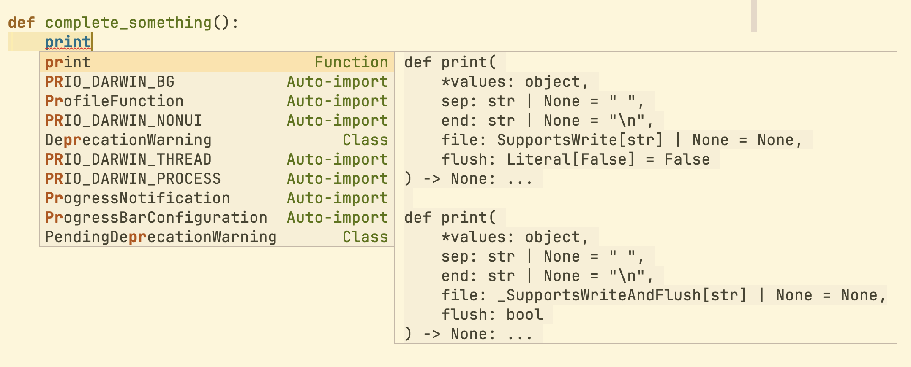
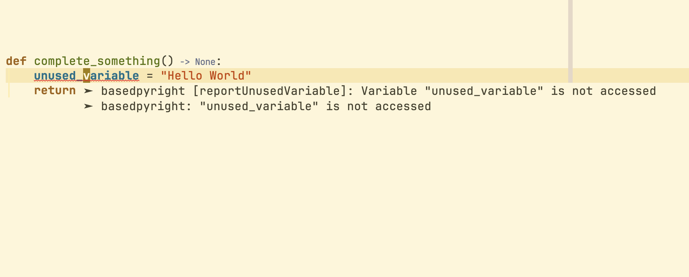
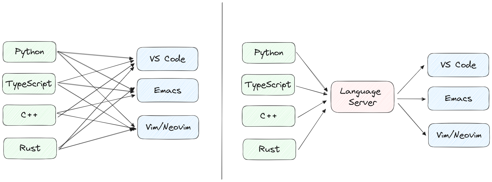
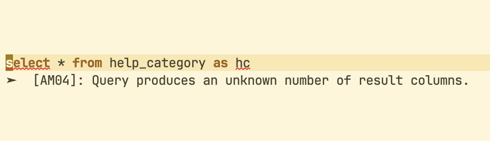
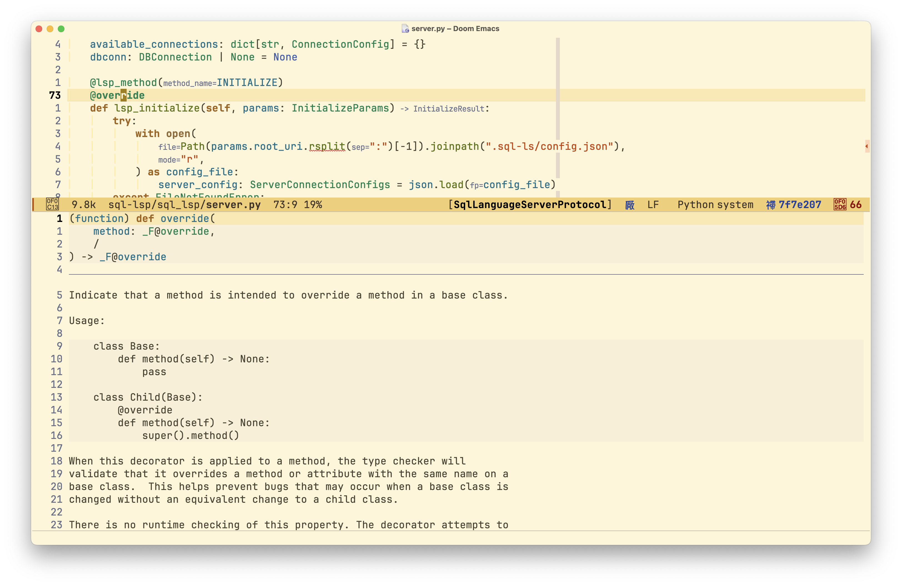

LSP Demystified
How to write an LSP server in Python
Chahak Mehta
(Software Engineer @ Arch.co)
Why Language Server Protocol (LSP)?
- Let’s start with a quick poll.
|  |  |

Figure 1: Feature implementation with & without Language Servers
LSP Specification and JSON-RPC
- How does this work?
A Language Server interacts with a stream of messages that follow a structure as defined in the Language Server Protocol (LSP).

Figure 2: Image from LSP Documentation - https://microsoft.github.io/language-server-protocol/overviews/lsp/overview/
- Each of these messages are structured as JSON-RPC messages which forms the basis of the Language Server Protocol.
Each of these capabilities have a defined specification for the Request and
its accepted Response. For example, for textDocument/definition
@attrs.define class TextDocumentDefinitionRequest: id: Union[int, str] = attrs.field() params: DefinitionParams = attrs.field() method: str = "textDocument/definition" jsonrpc: str = attrs.field(default="2.0")
- Code 1:
textDocument/definitionrequest as per https://github.com/microsoft/lsprotocol
@attrs.define class TextDocumentDefinitionResponse: id: Optional[Union[int, str]] = attrs.field() result: Union[Definition, List[DefinitionLink], None] = attrs.field(default=None) jsonrpc: str = attrs.field(default="2.0")
- Code 2:
textDocument/definitionresponse as per https://github.com/microsoft/lsprotocol
The client is then responsible to handle this response correctly and go to the
location defined in the response to textDocument/definition
Parsing the code
- The server needs to parse the code to understand it and respond to our requests.
- Most languages have a formal language grammar that can be used to generate an Abstract Syntax Tree (AST).
Example using
sqlfluff:from sqlfluff.core import Lexer, Parser text = document.source lexer = Lexer(config=fluff_config) parser = Parser(config=fluff_config) parsed_query = parser.parse(lexer.lex(text)[0])
Linting code and Publishing diagnostics
- Linting rules can now be applied on the Abstract Syntax Tree that we obtained by parsing the code.
These linting errors can be displayed on the editor as LSP diagnostics using the
textDocument/publishDiagnosticscapability.Code 3: Publish diagnostics capability using pygls
def _publish_diagnostics(ls: SqlLanguageServer, uri: str): """Publish diagnostics to LSP server.""" document = ls.workspace.get_text_document(uri) lint_diagnostics = sqlfluff.lint(document.source, dialect="mysql", config=fluff_config) diagnostics: list[Diagnostic] = [ Diagnostic( range=current_word_range( document, position=Position(line=x["line_no"] - 1, character=x["line_pos"] - 1), ), message=x["description"], code=x["code"], ) for x in lint_diagnostics ] ls.publish_diagnostics(uri, diagnostics=diagnostics)

Smart autocompletion
- One of the most used feature of Language Servers.
- Allows the server to suggest context-aware completion suggestions.
match current_segment.get_parent()[0]: case ColumnReferenceSegment(): curr_seg = segments[segment_id].raw prev_seg = segments[segment_id - 1].raw if curr_seg == "." or prev_seg == ".": alias = segments[segment_id - 1] if curr_seg == "." else segments[segment_id - 2] table_name = _get_alias_table_name(alias.raw, parsed_query) columns = dbconn.get_columns(table_name=table_name) else: columns = dbconn.get_columns() candidates.extend([ CompletionItem( label=col.name, kind=CompletionItemKind.Field, detail=col.table_name, documentation=str(col), sort_text="0", ) for col in columns if re.match(match_regex, col.name) ]) case TableReferenceSegment(): tables = dbconn.get_tables() candidates.extend([ CompletionItem( label=table.name, kind=CompletionItemKind.Field, detail=table.type, documentation=table.description, sort_text="1", ) for table in tables if re.match(match_regex, table.name) ])
Help text and documentation
- Another feature of Language Servers that we often use is the ability to see documentation or help text while writing code. This can be while looking at autocomplete candidates to select the right variable name or while just reading the code.
For autocomplete, this documentation comes from the
documentationkey set on eachCandidateItem.candidates.extend( [ CompletionItem( label=table.name, kind=CompletionItemKind.Field, detail=table.type, documentation=table.description, sort_text="1", ) for table in tables if re.match(match_regex, table.name) ] )
textDocument/hover capability defined by the LSP
specification defines the behaviour on hover which is another place where we
can see the documentation.
Figure 3: Example showing documentation for override on hover
Other methods and capabilities
- These were just a few of the major methods that are defined by the LSP spec.
There are many other functions like
codeAction,formattingetc. which can be used to implement features like -- Running the code
- Formatting the code
- Organizing imports etc.
Integration with editors
- Very simple changes can be made to make sure LSP clients to ensure the language server can correctly communicate with them.
For example, to enable query execution with
sql-lsineglot, we can use a simple patch:diff --git a/eglot.el b/eglot.el index f247c43..974e7d8 100644 --- a/eglot.el +++ b/eglot.el @@ -3685,7 +3685,15 @@ at point. With prefix argument, prompt for ACTION-KIND." (string-prefix-p action-kind (plist-get a :kind))) collect a))) (if interactive - (eglot--read-execute-code-action actions server action-kind) + (let ((serverName (plist-get (eglot--server-info server) :name))) + (if (string-equal serverName "sql-ls") + (with-current-buffer (get-buffer-create "*sql-ls-eglot results*") + (with-help-window (buffer-name) + (erase-buffer) + (insert (eglot--read-execute-code-action actions server action-kind)))) + (eglot--read-execute-code-action actions server action-kind))) + actions))) (defalias 'eglot-code-actions-at-mouse (eglot--mouse-call 'eglot-code-actions)
Demo
Summary